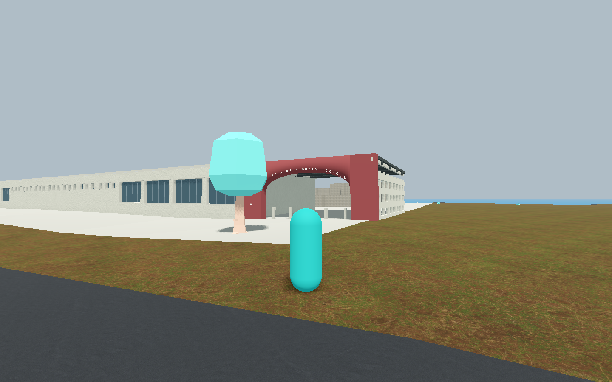
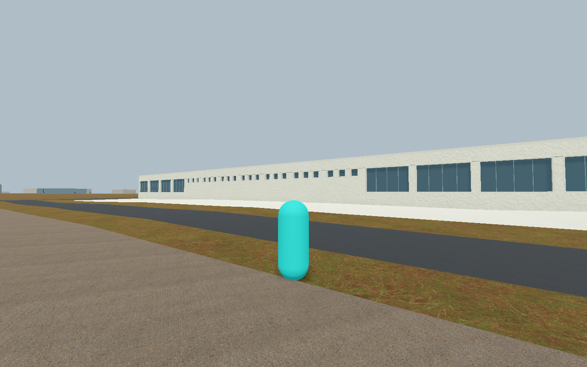
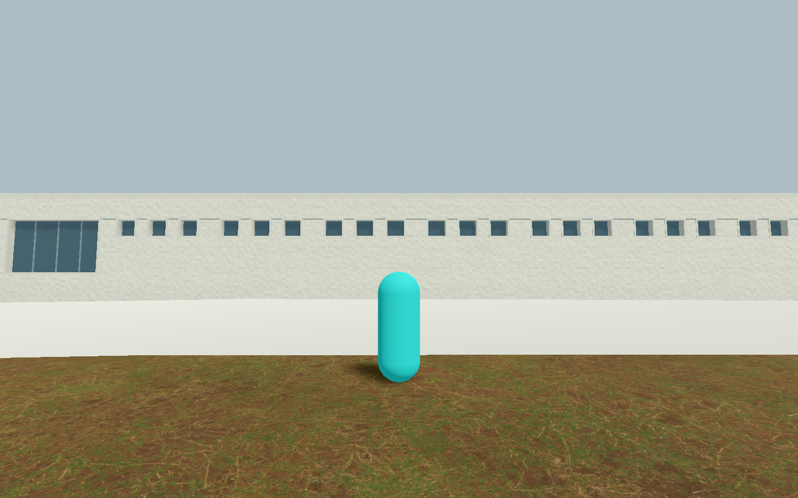
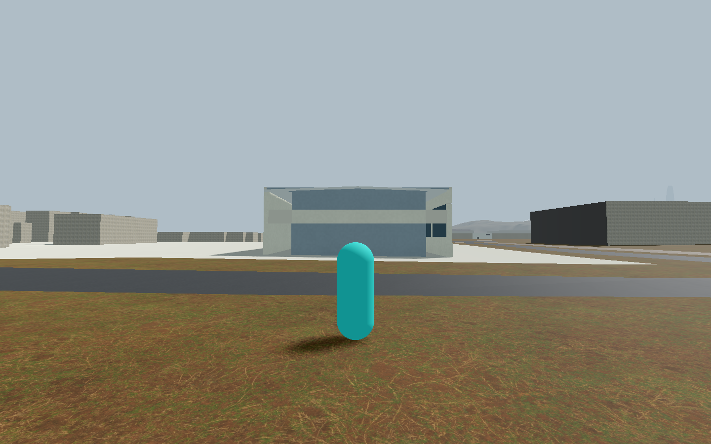

Four exact final native originals from material-006. Separate independent visual and source/mechanics reviews passed within the observed private-study scope. Not integrated in game, not a signed release, and no recognition credit.
Frozen way34313548, 750 Avenue M. Roof surfaces and east/rear details remain unresolved; mechanics cover selected entrance-mouth/frontage cases, not full campus traversal.
Scope and retained evidence · Public source locators



